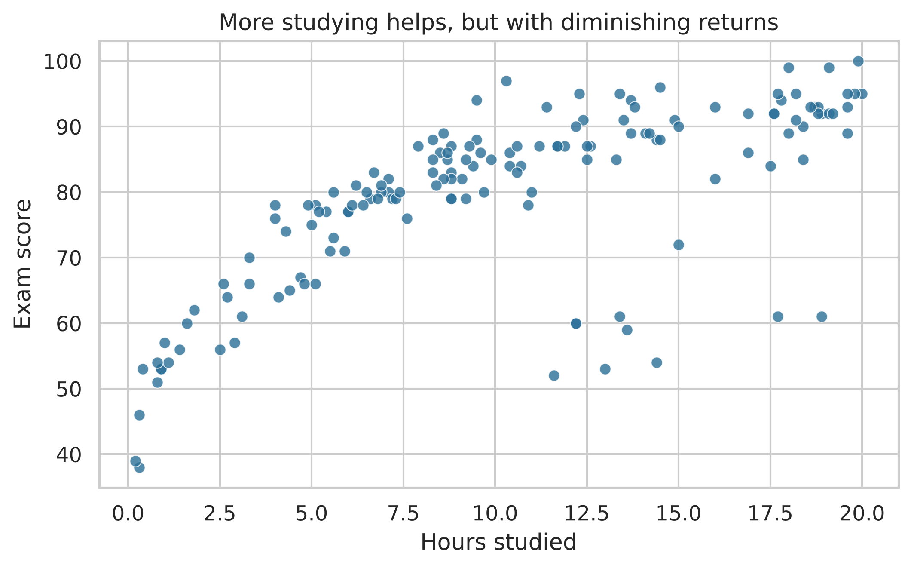
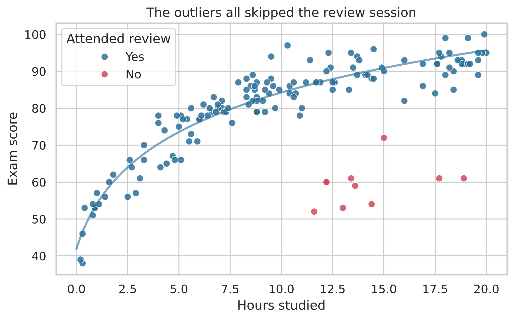

Your guess: Do students who study more score higher? Is each extra hour worth the same number of points? Are there any students who don’t fit the pattern?
Step 1: The basic scatterplot
TipReveal the scatterplot
Show the Python code
fig, ax = plt.subplots()sns.scatterplot(data=scores, x="hours_studied", y="exam_score", color="#2a6f97", s=40, alpha=0.8, ax=ax)ax.set(xlabel="Hours studied", ylabel="Exam score", title="More studying helps, but with diminishing returns")plt.show()

Three things are visible at once:
A clear positive relationship.
It curves: the first few hours add a lot of points; hours 15–20 add very little.
A small cluster of students who studied a lot but scored poorly.
That correlation coefficient, by the way, is r = 0.68. A single number can’t tell you about the curve or the cluster.
Step 2: Color by a third variable
What explains the low-scoring cluster? There’s one more column in the spreadsheet: whether the student attended the review session.
TipReveal the colored scatterplot
Show the Python code
fig, ax = plt.subplots()sns.scatterplot(data=scores, x="hours_studied", y="exam_score", hue="attended_review", palette={"Yes": "#2a6f97", "No": "#d1495b"}, s=45, alpha=0.85, ax=ax)# Smooth curve for students who attended, to show the bendyes = scores[scores["attended_review"] =="Yes"].sort_values("hours_studied")fit = np.polyfit(np.log1p(yes["hours_studied"]), yes["exam_score"], 1)grid = np.linspace(0, 20, 200)ax.plot(grid, np.polyval(fit, np.log1p(grid)), color="#2a6f97", lw=2, alpha=0.6)ax.set(xlabel="Hours studied", ylabel="Exam score", title="The outliers all skipped the review session")ax.legend(title="Attended review")plt.show()

Every student in the odd cluster skipped the review session. Finding that from the table means checking 150 rows across three columns; in the chart it’s one glance at the red dots.
Source Code
---title: "Scatterplots"subtitle: "How two numeric variables move together"---```{python}#| echo: falseimport numpy as npimport pandas as pdimport matplotlib.pyplot as pltimport seaborn as snsfrom sim_data import study_scorespd.set_option("display.max_rows", 500)sns.set_theme(style="whitegrid", font_scale=1.05)```## Experiment: Does studying more pay off?An instructor recorded how many hours each of 150 students studied for an exam and the score they earned.::: {.raw-table}```{python}scores = study_scores()scores[["student_id", "hours_studied", "exam_score"]]```:::::: {.guess}**Your guess:** Do students who study more score higher? Is each extra hour worth the same number of points? Are there any students who don't fit the pattern?:::## Step 1: The basic scatterplot::: {.callout-tip collapse="true"}## Reveal the scatterplot```{python}fig, ax = plt.subplots()sns.scatterplot(data=scores, x="hours_studied", y="exam_score", color="#2a6f97", s=40, alpha=0.8, ax=ax)ax.set(xlabel="Hours studied", ylabel="Exam score", title="More studying helps, but with diminishing returns")plt.show()```[Three things are visible at once:]{.reveal-note}1. A clear **positive** relationship.2. It **curves**: the first few hours add a lot of points; hours 15–20 add very little.3. A small **cluster of students** who studied a lot but scored poorly.[That correlation coefficient, by the way, is r = `{python} f"{scores['hours_studied'].corr(scores['exam_score']):.2f}"`. A single number can't tell you about the curve or the cluster.]{.reveal-note}:::## Step 2: Color by a third variableWhat explains the low-scoring cluster? There's one more column in the spreadsheet: whether the student attended the review session.::: {.callout-tip collapse="true"}## Reveal the colored scatterplot```{python}fig, ax = plt.subplots()sns.scatterplot(data=scores, x="hours_studied", y="exam_score", hue="attended_review", palette={"Yes": "#2a6f97", "No": "#d1495b"}, s=45, alpha=0.85, ax=ax)# Smooth curve for students who attended, to show the bendyes = scores[scores["attended_review"] =="Yes"].sort_values("hours_studied")fit = np.polyfit(np.log1p(yes["hours_studied"]), yes["exam_score"], 1)grid = np.linspace(0, 20, 200)ax.plot(grid, np.polyval(fit, np.log1p(grid)), color="#2a6f97", lw=2, alpha=0.6)ax.set(xlabel="Hours studied", ylabel="Exam score", title="The outliers all skipped the review session")ax.legend(title="Attended review")plt.show()```[Every student in the odd cluster skipped the review session. Finding that from the table means checking 150 rows across three columns; in the chart it's one glance at the red dots.]{.reveal-note}:::